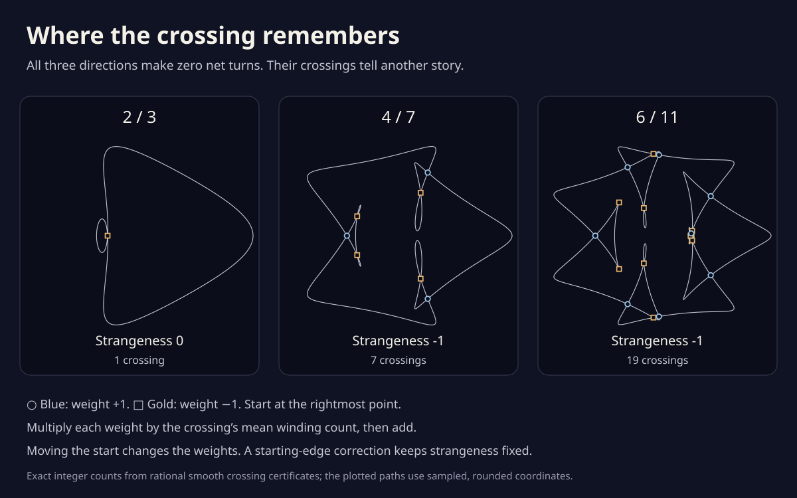

Where the crossing remembers
These three drawings share a curious fact: their direction of travel makes zero net turns. Their crossings carry another integer, called strangeness. It stays fixed when two branches touch and separate, but can change when three branches pass through the same point.
Choose where to begin traveling around a drawing. A crossing’s weight depends on which branch you meet first. Moving the start changes the weights and their sum. A small correction keeps the final answer fixed.
Each step moves the start past one crossing visit. The white dot marks the starting edge; the arrow shows travel direction.
Strangeness −1, with no starting-edge correction.
The sum that stays put
Weighted crossings + starting-edge correction = strangeness.
The starting edge has winding index ½. Its correction is 0.
Crossing 1
Its mean winding count and the sign of its first encounter give its contribution.
The order of visits
Each number appears twice, with opposite signs. Its first sign is its weight. The outlined pair belongs to the selected crossing. Read from left to right.
All crossing contributions
At each crossing, average the winding counts of its four surrounding sectors. Multiply that integer by its weight. Select a crossing to locate it in the picture.
| Crossing | Weight | Mean count | Product |
|---|

What is a crossing’s weight?
At your first visit to a crossing, look in your direction of travel. If the other branch points from left to right across your path, give the crossing weight +1. If it points from right to left, give it weight −1. On the second visit the sign is opposite. Keep the first one as the weight.
The mean count is the average of the winding numbers in the four sectors around the crossing. A sector counts how many times the complete curve circles a point in it, with counterclockwise turns positive. All four sectors count, even when the same region appears twice.
The starting edge has the average count of the two regions beside it. This is a half-integer δ. Its correction is δ² − ¼. On an outside edge δ = ±½ and the correction vanishes. Farther inside it can be 2, 6, or more.
Why does moving the start leave the answer alone?
Moving the start past a single crossing visit flips that crossing’s weight. The change in its contribution is exactly canceled by the change in δ². All other crossing weights stay as they were. This is why you can choose any starting edge.
The two drawings with values 0 and −1 share the same tangent index, but a route between them that keeps moving must encounter a multiple-branch event. Along a generic route with only ordinary touches and isolated triple meetings, the difference in strangeness requires at least one triple meeting. Equal strangeness alone does not rule such meetings out.
The arm detour already gives a route that keeps moving. Its mirror symmetry forces special contacts; a list of selected local meetings is not a complete event census. These endpoint values do not supply that missing census.